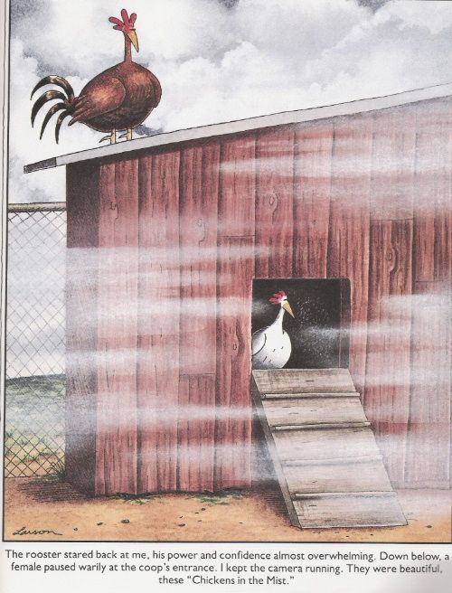
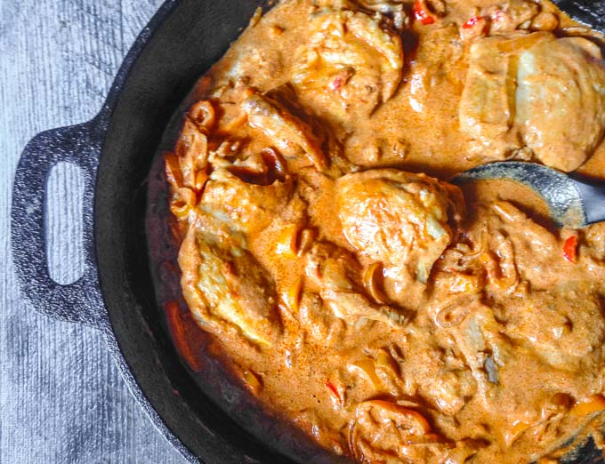

Mistica chicken is a variation of creamy paprika chicken, with my mother's addition of a very Egyptian flavor: mastic gum.
 Toss the chicken breasts in flour and lightly brown in 2 T butter. Remove from heat. Add diced onion and cook until golden. Add mastic until melted and blend it with the onions. Return chicken to pan, add paprika and cayenne and stir. Add the water, lime juice, and boullion and stir. By now you should have a thick sauce. Add heavy cream.